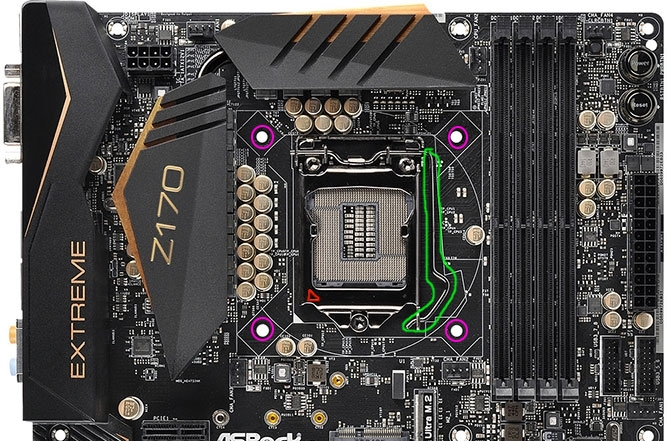
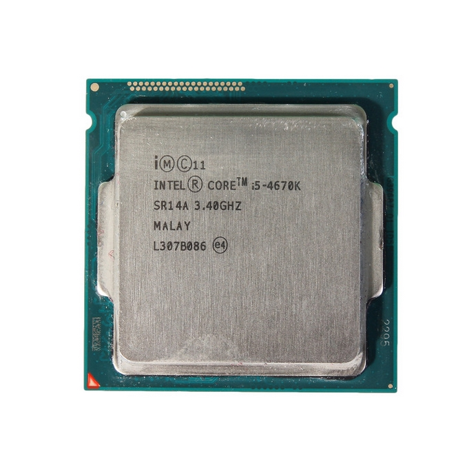

Installing the CPU!
The CPU (central processing unit) is probably the most important component in a PC. It processes everything for the PC, hence the name. You need to be extremely careful with this installation.
You will not need any tools for this process, unless you purchased a separate cooling system for the CPU. In that case, refer to the manual. I will only be describing how to install the included heatsink and fan.
This process will require you to unbox your motherboard. Each one is different, but they will have the same slots for parts. The CPU slot will be the biggest change between boards, so make sure you purchase compatible parts or use one
of the buying guides on the site! Open the motherboard and set it aside.
Click any images on this page to open them in a separate tab/window for better viewing.

Steps:
- Pull out and up on the latch on the motherboard's CPU slot (highlighted in green in the image to the right). This is the square section in the center of the board. This will open the CPU's socket. Ignore the socket cover. It will pop out when you close the latch again. If you followed one of my buying guides, this will be full of tiny pins. Be sure not to bend them!
- Take the CPU, which will have no pins if you followed one of my buying guides, and gently place it on the motherboard, lying the left side down first. Line up the arrow in the bottom left corner of the CPU and on the bottom left of the latch on the motherboard (highlighted in red in the images on this page.) Do NOT apply pressure to the CPU as you lay it in place! This could bend the pins!
- Once the CPU is in place, close the latch the same way you opened it. This will require a bit more force, but it will not break, so long as you only push down on the latch to close it again (once again, highlighted in green). The socket cover will pop out. Keep it for safe storage of the motherboard later.
- Next, take the CPU fan included with your CPU. Place it over the CPU. It has thermal paste applied already, which is required. If you bought a new CPU cooler, follow their instructions for thermal paste installation.
- Push the "legs" of the cooler through the holes in the motherboard (highlighted in purple). Be careful not to apply too much force on the board, as you could snap it. Once the "legs" are through, twist the knobs on the cooler the way the arrows point (see image of a cooler below) to lock the cooler in place.
- Take the CPU fan plug and insert it into the only place it will go, around the CPU socket. If you cannot find it, refer to the motherboard manual. It will only plug in to one spot, so it shouldn't be too hard to find!
It's very important that you do not apply too much pressure to the CPU at any point during this process. The pins for this part are very very fragile, and not easy to replace.
If your CPU is not one of the Intel LGA sockets, it may have pins on the CPU. If this is the case, just be extra careful to not bend any of them. Place the pins in the holes on the board.
Once you are done, the CPU should be hidden under the cooler. Once again, if you purchased any other cooler, refer to the manual!
Now that the hardest part is out of the way, you are ready to move on to more easy stuff!